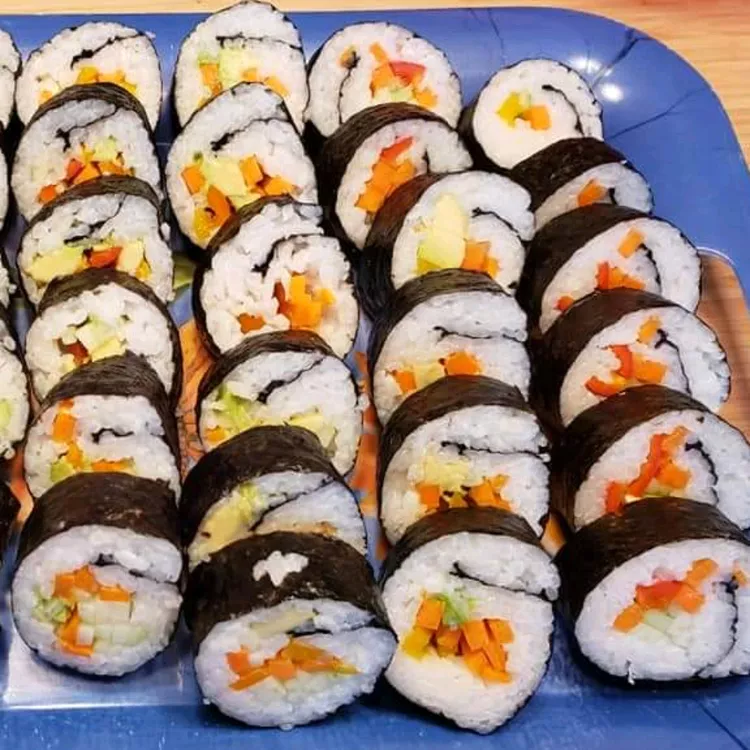

Sushi Rice Recipe

Description
Here is my recipe for the perfect sushi rice. You can eat this alone or roll into
your favorite sushi roll with ingredients of choice. I use strips of carrots,
cucumbers and slices of avocado. You can adjust the amount of vinegar in this
to suit your taste.
The first step to perfect homemade sushi? Perfect homemade sushi rice. This
top-rated sushi rice recipe comes together quickly on the stove with just a few
basic ingredients you probably already have on hand.
Ingredients
- 2 cups uncooked glutinous white rice(sushi rice)
- 3 cups water
- ½ cup rice vinegar
- 1 tablespoon Vegetable oil
- ¼ cup white sugar
- 1 teaspoon salt
Steps
- Gather all ingredients
- Rinse the rice in a strainer or colander under cold running water until the water runs clear
- Combine rice and water in a saucepan over medium-high heat and bring to a boil. Reduce heat to low, cover, and cook until rice is tender and all water has been absorbed, about 20 minutes. Remove from stove and set aside until cool enough to handle.
- Meanwhile, combine rice vinegar, oil, sugar, and salt in a small saucepan over medium heat. Cook until the sugar has dissolved. Allow to cool. Then stir into the cooked rice. While mixture will appear very wet at first, keep stirring and rice will dry as it cools.
- Then stir into the cooked rice. While mixture will appear very wet at first, keep stirring and rice will dry as it cools.
- Enjoy!